Last updated: 2026-07-10
Checks: 6 1
Knit directory: MuPericarditis/
This reproducible R Markdown analysis was created with workflowr (version 1.7.2). The Checks tab describes the reproducibility checks that were applied when the results were created. The Past versions tab lists the development history.
The R Markdown is untracked by Git. To know which version of the R
Markdown file created these results, you’ll want to first commit it to
the Git repo. If you’re still working on the analysis, you can ignore
this warning. When you’re finished, you can run
wflow_publish to commit the R Markdown file and build the
HTML.
Great job! The global environment was empty. Objects defined in the global environment can affect the analysis in your R Markdown file in unknown ways. For reproduciblity it’s best to always run the code in an empty environment.
The command set.seed(20251126) was run prior to running
the code in the R Markdown file. Setting a seed ensures that any results
that rely on randomness, e.g. subsampling or permutations, are
reproducible.
Great job! Recording the operating system, R version, and package versions is critical for reproducibility.
Nice! There were no cached chunks for this analysis, so you can be confident that you successfully produced the results during this run.
Great job! Using relative paths to the files within your workflowr project makes it easier to run your code on other machines.
Great! You are using Git for version control. Tracking code development and connecting the code version to the results is critical for reproducibility.
The results in this page were generated with repository version 3f4022e. See the Past versions tab to see a history of the changes made to the R Markdown and HTML files.
Note that you need to be careful to ensure that all relevant files for
the analysis have been committed to Git prior to generating the results
(you can use wflow_publish or
wflow_git_commit). workflowr only checks the R Markdown
file, but you know if there are other scripts or data files that it
depends on. Below is the status of the Git repository when the results
were generated:
Ignored files:
Ignored: .Rproj.user/
Ignored: data/
Untracked files:
Untracked: analysis/10_subset_Tcells.Rmd
Untracked: analysis/11_characterize_Tcells.Rmd
Untracked: analysis/12_cellchat_TCRM_vs_Ctrl.Rmd
Untracked: analysis/13_cellchat_T_FB_merge.Rmd
Untracked: analysis/4_characterize_full_dataset.Rmd
Untracked: analysis/5_IL6_full_dataset.Rmd
Untracked: analysis/6_Subset_FBs.Rmd
Untracked: analysis/7_characterize_FBs.Rmd
Untracked: analysis/8_FRC_Ctrl_vs_TCRM.Rmd
Untracked: analysis/9_IL6_FBs.Rmd
Unstaged changes:
Modified: .gitignore
Deleted: analysis/10_subset T cells.Rmd
Deleted: analysis/11_characterize T cells.Rmd
Deleted: analysis/12_cellchat TCRM vs Ctrl.Rmd
Deleted: analysis/13_cellchat T FB merge.Rmd
Deleted: analysis/4_characterize full dataset.Rmd
Deleted: analysis/5_IL6 full dataset.Rmd
Deleted: analysis/6_Subset FBs.Rmd
Deleted: analysis/7_characterize FBs.Rmd
Deleted: analysis/8_FRC Ctrl vs TCRM.Rmd
Deleted: analysis/9_IL6 FBs.Rmd
Note that any generated files, e.g. HTML, png, CSS, etc., are not included in this status report because it is ok for generated content to have uncommitted changes.
There are no past versions. Publish this analysis with
wflow_publish() to start tracking its development.
#Load packages
suppressPackageStartupMessages({
library(Seurat)
library(ggpubr)
library(pheatmap)
library(dplyr)
library(tidyverse)
library(clusterProfiler)
library(org.Mm.eg.db)
library(enrichplot)
library(DOSE)
library(grid)
library(ggplot2)
library(here)
library (tibble)
})# Load merged and cleaned object containing FBs
basedir<- here()
fileNam <- paste0(basedir, "/data/pericarditis_allmerged_FB_cleaned_seurat.rds")
seuratFB <- readRDS(fileNam)Idents(seuratFB) <- seuratFB$RNA_snn_res.0.2
DimPlot(seuratFB, reduction = "umap", label = T)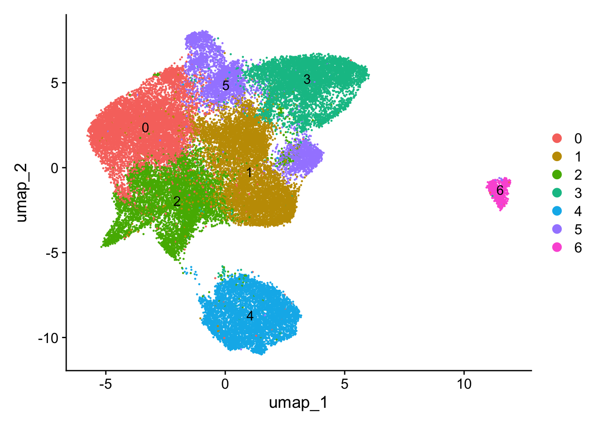
Idents(seuratFB) <- seuratFB$RNA_snn_res.0.25
DimPlot(seuratFB, reduction = "umap", label = T)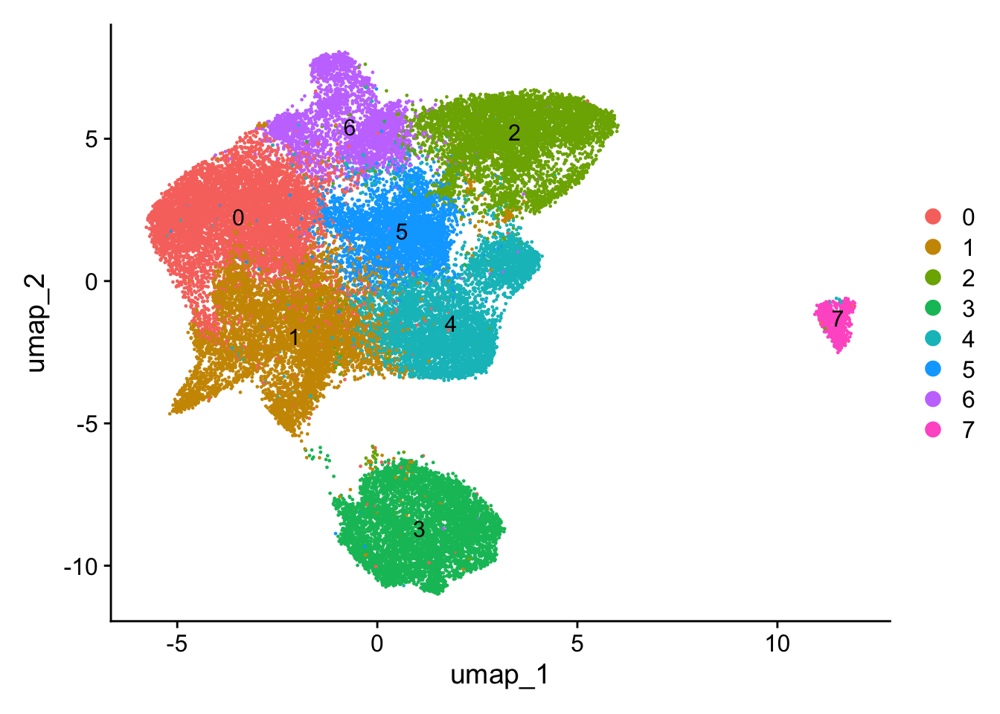
Idents(seuratFB) <- seuratFB$RNA_snn_res.0.4
DimPlot(seuratFB, reduction = "umap", label = T)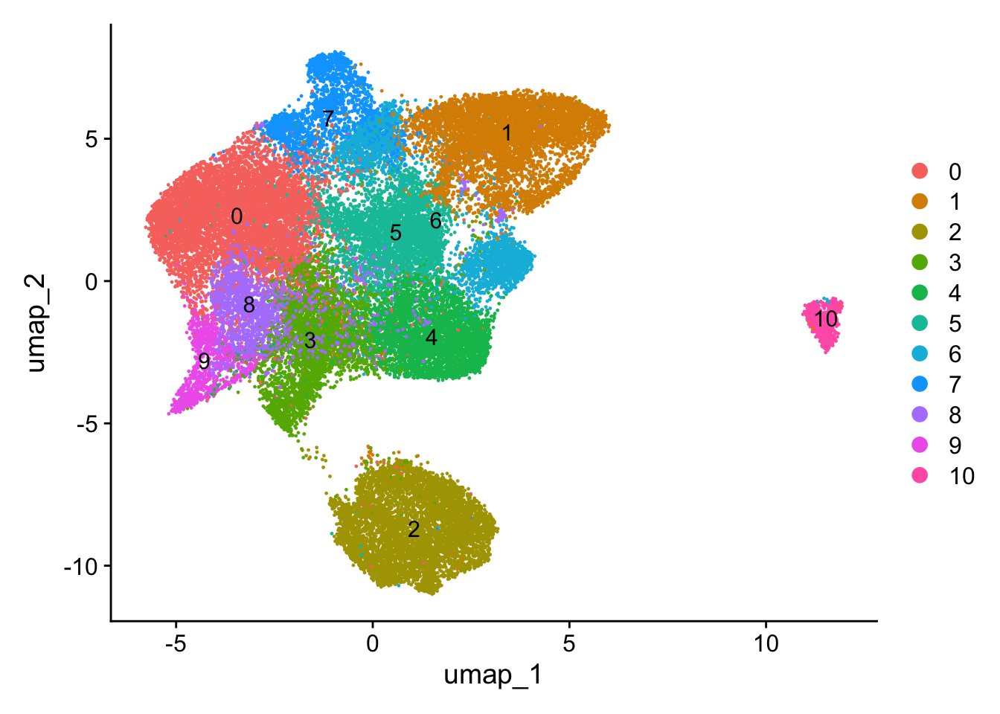
# Set identity to resolution 0.25
Idents(seuratFB) <- seuratFB$RNA_snn_res.0.25
# Run marker genes
seuratFB_markers_all <- FindAllMarkers(object = seuratFB, assay ="RNA",
only.pos = TRUE, min.pct = 0.25,
logfc.threshold = 0.25,
test.use = "wilcox")
# Save marker genes as text file
basedir<- here()
basedir <- paste0(basedir, "/docs/")
write.table(
seuratFB_markers_all,
file = paste0(basedir, "pericarditis_allmerged_FB_cleaned_0.25_markerGenes.txt"),
row.names = FALSE,
quote = FALSE,
sep = "\t"
)seuratFB$cluster <- seuratFB$RNA_snn_res.0.25
seuratFB$FBclusterLabel <- "FBclusterLabel"
seuratFB$FBclusterLabel[which(seuratFB$RNA_snn_res.0.25 %in% c("0"))] <- "Fat4 Fibroblasts"
seuratFB$FBclusterLabel[which(seuratFB$RNA_snn_res.0.25 %in% c("1"))] <- "Ccl19 FRCs"
seuratFB$FBclusterLabel[which(seuratFB$RNA_snn_res.0.25 %in% c("2"))] <- "Tcf21 Fibroblasts"
seuratFB$FBclusterLabel[which(seuratFB$RNA_snn_res.0.25 %in% c("3"))] <- "Cxcl13 CoverCells"
seuratFB$FBclusterLabel[which(seuratFB$RNA_snn_res.0.25 %in% c("4"))] <- "Ccl11 Fibroblasts"
seuratFB$FBclusterLabel[which(seuratFB$RNA_snn_res.0.25 %in% c("5"))] <- "Dpp4 Fibroblasts"
seuratFB$FBclusterLabel[which(seuratFB$RNA_snn_res.0.25 %in% c("6"))] <- "Bmp4 Fibroblasts"
seuratFB$FBclusterLabel[which(seuratFB$RNA_snn_res.0.25 %in% c("7"))] <- "Col11 Fibroblasts"# Color palette FBclusterLabel
colPal_FB <- c("#C1CDC1", "#EEE8AA", "#556B2F", "#CD6839", "#B2CD5B", "#A2B5CD","#DCA86C", "#6B7F99")
names(colPal_FB) <- c("Fat4 Fibroblasts","Ccl11 Fibroblasts", "Tcf21 Fibroblasts", "Cxcl13 CoverCells", "Ccl19 FRCs", "Bmp4 Fibroblasts", "Col11 Fibroblasts", "Dpp4 Fibroblasts")
# Color palette Phenotypes
colPal_Phenotype <- c("#8B0000", "#FCDACB", "#E6E6E6")
names(colPal_Phenotype) <- c( "iCMP", "inflamed", "healthy")table(seuratFB$orig.ident)
38908 table(seuratFB$cond)
LMC TCRM
19640 19268 table(seuratFB$Phenotype)
healthy iCMP inflamed
19640 5044 14224 table(seuratFB$FBclusterLabel)
Bmp4 Fibroblasts Ccl11 Fibroblasts Ccl19 FRCs Col11 Fibroblasts
3298 5238 6650 585
Cxcl13 CoverCells Dpp4 Fibroblasts Fat4 Fibroblasts Tcf21 Fibroblasts
5770 3664 7869 5834 Idents(seuratFB) <- seuratFB$FBclusterLabel
DimPlot(seuratFB, reduction = "umap", cols=colPal_FB, group.by= "FBclusterLabel")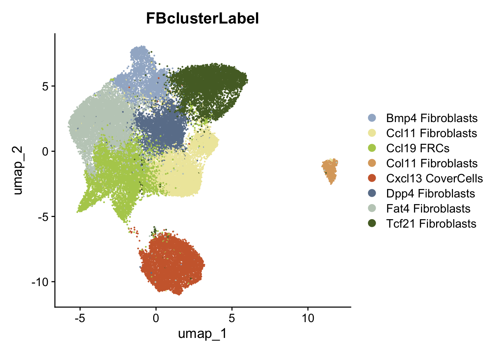
DimPlot(seuratFB, reduction = "umap", cols=colPal_FB, label = F, group.by= "FBclusterLabel", split.by = "cond")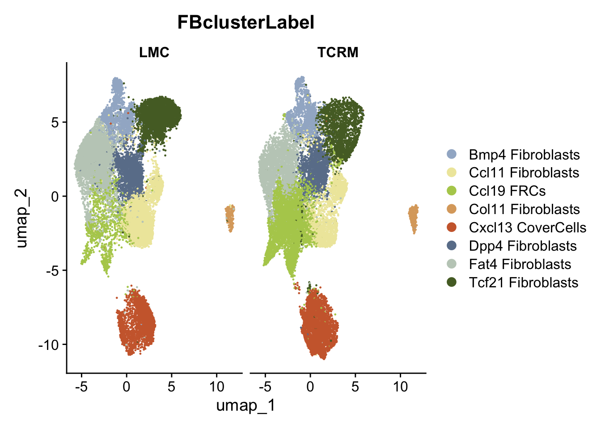
# Set identity to resolution FBclusterLabel
Idents(seuratFB) <- seuratFB$FBclusterLabel
# Run marker genes
seuratFB_markers_all <- FindAllMarkers(object = seuratFB, assay ="RNA",
only.pos = TRUE, min.pct = 0.25,
logfc.threshold = 0.25,
test.use = "wilcox")
# Save marker genes as text file
basedir<- here()
basedir <- paste0(basedir, "/docs/")
write.table(
seuratFB_markers_all,
file = paste0(basedir, "pericarditis_allmerged_FB_0.25_cL_markerGenes.txt"),
row.names = FALSE,
quote = FALSE,
sep = "\t"
)basedir<- here()
fileNam <- paste0(basedir, "/docs/pericarditis_allmerged_FB_0.25_cL_markerGenes.txt")
seuratFB_MarkerGenes <- read.table(fileNam, header = TRUE, sep = "\t", stringsAsFactors = FALSE)avgHeatmap <- function(seuratFB, selGenes, colVecIdent, colVecCond=NULL,
ordVec=NULL, gapVecR=NULL, gapVecC=NULL,cc=FALSE,
cr=FALSE, condCol=FALSE){
selGenes <- selGenes$gene
## assay data
clusterAssigned <- as.data.frame(Idents(seuratFB)) %>%
dplyr::mutate(cell=rownames(.))
colnames(clusterAssigned)[1] <- "ident"
seuratFBDat <- GetAssayData(seuratFB)
## genes of interest
genes <- data.frame(gene=rownames(seuratFB)) %>%
mutate(geneID=gsub("^.*\\.", "", gene)) %>% filter(geneID %in% selGenes)
## matrix with averaged cnts per ident
logNormExpres <- as.data.frame(t(as.matrix(
seuratFBDat[which(rownames(seuratFBDat) %in% genes$gene),])))
logNormExpres <- logNormExpres %>% dplyr::mutate(cell=rownames(.)) %>%
dplyr::left_join(.,clusterAssigned, by=c("cell")) %>%
dplyr::select(-cell) %>% dplyr::group_by(ident) %>%
dplyr::summarise_all(mean)
logNormExpresMa <- logNormExpres %>% dplyr::select(-ident) %>% as.matrix()
rownames(logNormExpresMa) <- logNormExpres$ident
logNormExpresMa <- t(logNormExpresMa)
rownames(logNormExpresMa) <- gsub("^.*?\\.","",rownames(logNormExpresMa))
## remove genes if they are all the same in all groups
ind <- apply(logNormExpresMa, 1, sd) == 0
logNormExpresMa <- logNormExpresMa[!ind,]
genes <- genes[!ind,]
## color columns according to cluster
annotation_col <- as.data.frame(gsub("(^.*?_)","",
colnames(logNormExpresMa)))%>%
dplyr::mutate(celltype=gsub("(_.*$)","",colnames(logNormExpresMa)))
colnames(annotation_col)[1] <- "col1"
annotation_col <- annotation_col %>%
dplyr::mutate(cond = gsub("(^[0-9]_?)","",col1)) %>%
dplyr::select(cond, celltype)
rownames(annotation_col) <- colnames(logNormExpresMa)
ann_colors = list(
#cond = colVecCond,
celltype=colVecIdent)
if(is.null(ann_colors$cond)){
annotation_col$cond <- NULL
}
## adjust order
logNormExpresMa <- logNormExpresMa[selGenes,]
if(is.null(ordVec)){
ordVec <- levels(seuratFB)
}
logNormExpresMa <- logNormExpresMa[,ordVec]
## scaled row-wise
pheatmap(logNormExpresMa, scale="row" ,treeheight_row = 0, cluster_rows = cr,
cluster_cols = cc,
color = colorRampPalette(c("#2166AC", "#F7F7F7", "#B2182B"))(50),
annotation_col = annotation_col, cellwidth=15, cellheight=10,
annotation_colors = ann_colors, gaps_row = gapVecR, gaps_col = gapVecC)
}cluster <- levels(seuratFB)
selGenesAll <- seuratFB_MarkerGenes %>% group_by(cluster) %>%
top_n(-10, p_val_adj) %>%
top_n(10, avg_log2FC)
names(selGenesAll) [names(selGenesAll) == "gene"] <- "Gene"
selGenesAll <- selGenesAll %>% mutate(gene=gsub("^.*\\.", "", Gene)) %>% filter(nchar(Gene)>1)
colPal_FB <- c("#C1CDC1", "#EEE8AA", "#556B2F", "#CD6839", "#B2CD5B", "#A2B5CD","#DCA86C", "#6B7F99")
names(colPal_FB) <- c("Fat4 Fibroblasts","Ccl11 Fibroblasts", "Tcf21 Fibroblasts", "Cxcl13 CoverCells", "Ccl19 FRCs", "Bmp4 Fibroblasts", "Col11 Fibroblasts", "Dpp4 Fibroblasts")
ordVec <- c("Ccl19 FRCs", "Cxcl13 CoverCells", "Dpp4 Fibroblasts", "Ccl11 Fibroblasts", "Fat4 Fibroblasts", "Bmp4 Fibroblasts", "Tcf21 Fibroblasts", "Col11 Fibroblasts")
Idents(seuratFB) <- seuratFB$FBclusterLabel
pOut <- avgHeatmap(seurat = seuratFB, selGenes = selGenesAll,
colVecIdent = colPal_FB,
ordVec=ordVec,
gapVecR=NULL, gapVecC=NULL,cc=FALSE,
cr=T, condCol=F)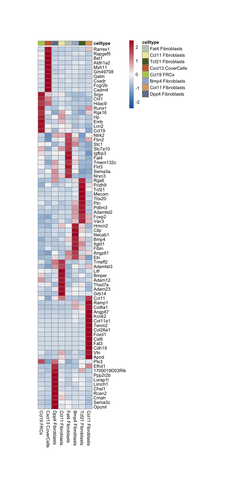
genes <- data.frame(gene=rownames(seuratFB))
selMarker <- list(stroma = c("Ccl19","Il6","Ccl2", "Cxcl1","Cxcl13", "Icam1", "Vcam1", "Il33", "Ccl11"))
Idents(seuratFB) <- seuratFB$FBclusterLabel
selGenes <- data.frame(gene=unlist(selMarker)) %>%
rownames_to_column(var="grp") %>% mutate(Grp=gsub("_.*", "", grp))
grpCnt <- selGenes %>% group_by(Grp) %>% summarise(cnt=n())
gapR <- data.frame(Grp=unique(selGenes$Grp)) %>%
left_join(.,grpCnt, by="Grp") %>% mutate(cumSum=cumsum(cnt))
colPal_FB <- c("#C1CDC1", "#EEE8AA", "#556B2F", "#CD6839", "#B2CD5B", "#A2B5CD","#DCA86C", "#6B7F99")
names(colPal_FB) <- c("Fat4 Fibroblasts","Ccl11 Fibroblasts", "Tcf21 Fibroblasts", "Cxcl13 CoverCells", "Ccl19 FRCs", "Bmp4 Fibroblasts", "Col11 Fibroblasts", "Dpp4 Fibroblasts")
ordVec <- c("Ccl19 FRCs", "Cxcl13 CoverCells", "Dpp4 Fibroblasts", "Ccl11 Fibroblasts", "Fat4 Fibroblasts", "Bmp4 Fibroblasts", "Tcf21 Fibroblasts", "Col11 Fibroblasts")
pOut <- avgHeatmap(seuratFB = seuratFB, selGenes = selGenes,
colVecIdent = colPal_FB,
ordVec=ordVec,
gapVecR=NULL, gapVecC=NULL,cc=F,
cr=T, condCol=F)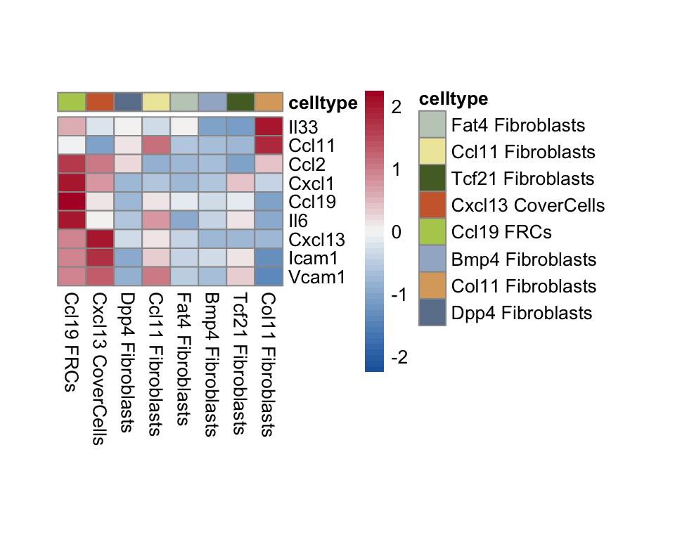
genes <- data.frame(gene=rownames(seuratFB))
selMarker <- list(stroma = c("Col1a1", "Col15a1", "Col11a1", "Eln", "Col8a1", "Col6a1", "Tgfbi", "Dcn", "Ogn"))
Idents(seuratFB) <- seuratFB$FBclusterLabel
selGenes <- data.frame(gene=unlist(selMarker)) %>%
rownames_to_column(var="grp") %>% mutate(Grp=gsub("_.*", "", grp))
grpCnt <- selGenes %>% group_by(Grp) %>% summarise(cnt=n())
gapR <- data.frame(Grp=unique(selGenes$Grp)) %>%
left_join(.,grpCnt, by="Grp") %>% mutate(cumSum=cumsum(cnt))
colPal_FB <- c("#C1CDC1", "#EEE8AA", "#556B2F", "#CD6839", "#B2CD5B", "#A2B5CD","#DCA86C", "#6B7F99")
names(colPal_FB) <- c("Fat4 Fibroblasts","Ccl11 Fibroblasts", "Tcf21 Fibroblasts", "Cxcl13 CoverCells", "Ccl19 FRCs", "Bmp4 Fibroblasts", "Col11 Fibroblasts", "Dpp4 Fibroblasts")
ordVec <- c("Ccl19 FRCs", "Cxcl13 CoverCells", "Dpp4 Fibroblasts", "Ccl11 Fibroblasts", "Fat4 Fibroblasts", "Bmp4 Fibroblasts", "Tcf21 Fibroblasts", "Col11 Fibroblasts")
pOut <- avgHeatmap(seuratFB = seuratFB, selGenes = selGenes,
colVecIdent = colPal_FB,
ordVec=ordVec,
gapVecR=NULL, gapVecC=NULL,cc=F,
cr=T, condCol=F)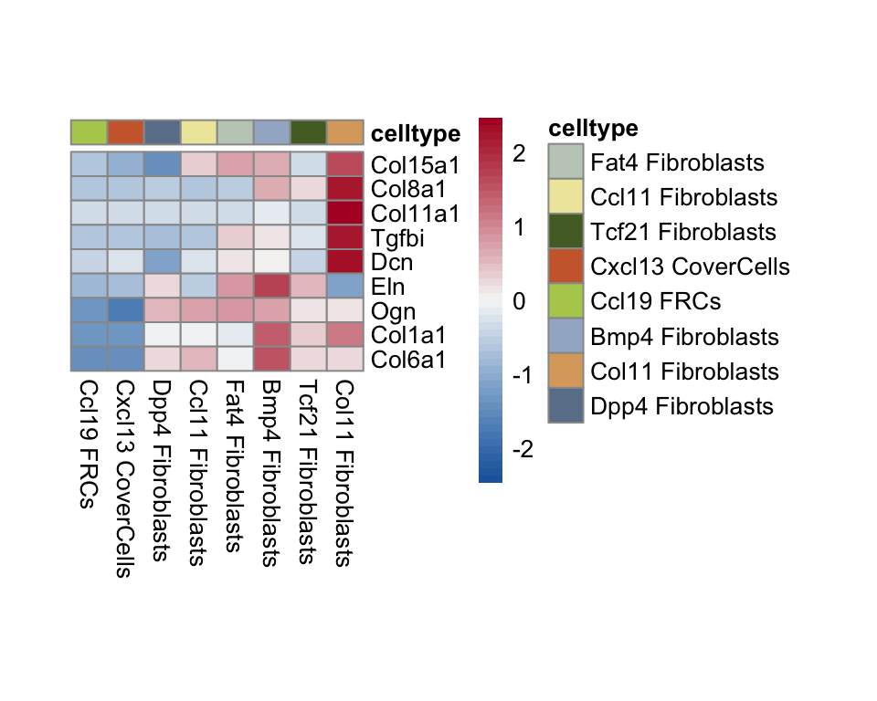
## Dotplot of selected marker genes {.tabset}Idents(seuratFB) <- seuratFB$FBclusterLabel
# Marker genes as simple vector
selMarker <- c("Pdgfra", "Pdpn", "Cxcl13", "Ccl19", "Ccl11", "Tcf21", "Bmp4", "Col11a1", "Dpp4", "Fat4", "Aldh1a2")
# Assign a full gene name to the short geneID
genes <- data.frame(gene=rownames(seuratFB)) %>% mutate(geneID=gsub(".*\\.", "", gene)) %>%
filter(geneID %in% as.character(selMarker)) %>% arrange(factor(geneID, levels = rev(selMarker)))
# Create dataframe of cL
clusterDat <- data.frame(cluster=levels(seuratFB)) %>%
mutate(label = levels(seuratFB))
# Scale the gene across all clusters
DotPlot(
object=seuratFB,
features = genes$gene,
cols = c("#2C3E50", "#F1E6A1"),
col.min = -2.5,
col.max = 2.5,
dot.min = 0,
dot.scale = 6,
idents = NULL,
group.by = NULL,
split.by = NULL,
cluster.idents = T, #TRUE= automatic order, FALSE= ordered
scale = T,
scale.by = "radius",
scale.min = NA,
scale.max = NA
) + coord_flip() + scale_x_discrete(breaks=genes$gene, labels=genes$geneID) + scale_y_discrete(breaks=clusterDat$cluster, labels=clusterDat$label) + theme(axis.text.x = element_text(angle = 90))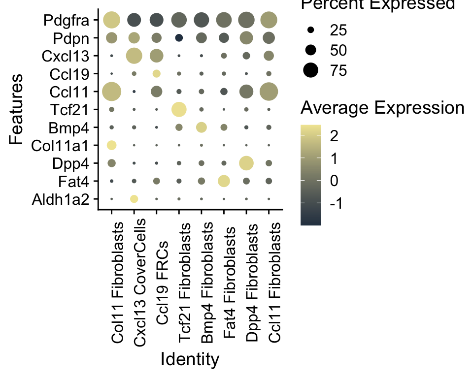
# Set cluster order
ordVec <- c("Ccl19 FRCs", "Cxcl13 CoverCells", "Dpp4 Fibroblasts", "Ccl11 Fibroblasts", "Fat4 Fibroblasts", "Bmp4 Fibroblasts", "Tcf21 Fibroblasts", "Col11 Fibroblasts")
# Set identities
Idents(seuratFB) <- seuratFB$FBclusterLabel
Idents(seuratFB) <- factor(Idents(seuratFB), levels = ordVec)
# Marker genes as simple vector
selMarker <- c("Pdgfra", "Pdpn", "Cxcl13", "Ccl19", "Ccl11", "Tcf21", "Bmp4", "Col11a1", "Dpp4", "Fat4", "Aldh1a2")
# Assign a full gene name to the short geneID
genes <- data.frame(gene=rownames(seuratFB)) %>% mutate(geneID=gsub(".*\\.", "", gene)) %>%
filter(geneID %in% as.character(selMarker)) %>% arrange(factor(geneID, levels = rev(selMarker)))
# Scale the gene across all clusters
DotPlot(
object = seuratFB,
features = genes$gene,
cols = c("#2C3E50", "#F1E6A1"),
col.min = -2.5,
col.max = 2.5,
dot.min = 0,
dot.scale = 6,
cluster.idents = TRUE,
scale = TRUE,
scale.by = "radius"
) +
coord_flip() + scale_x_discrete(breaks = genes$gene,labels = genes$geneID) + scale_y_discrete(limits = ordVec) + theme(axis.text.x = element_text(angle = 90))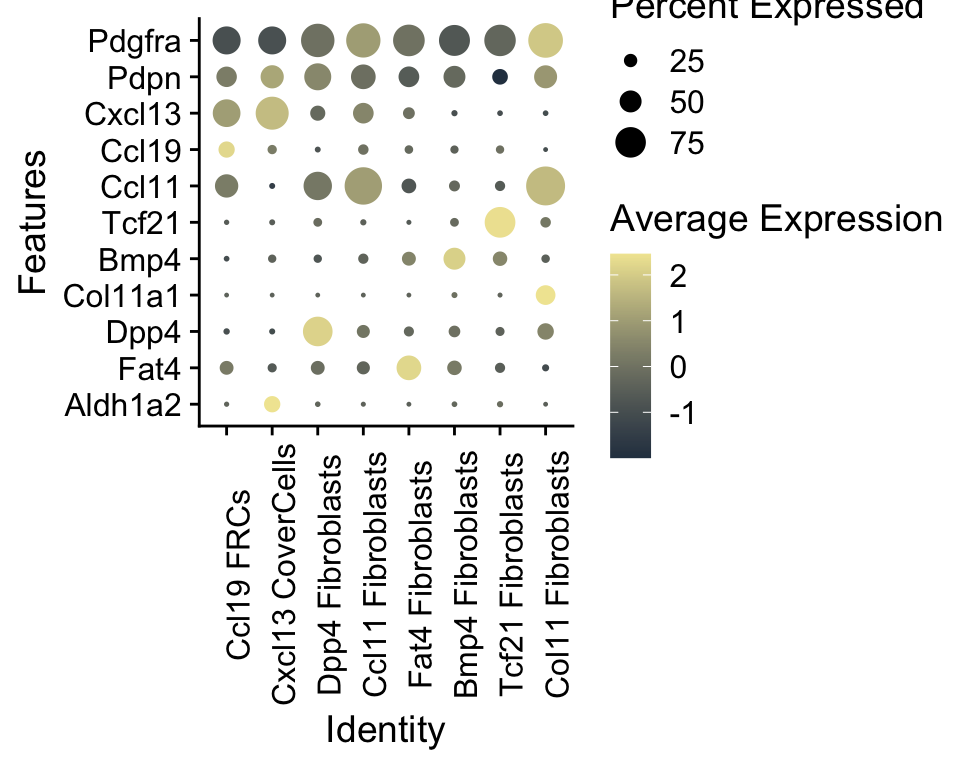
## Cluster abundances {.tabset}# Plot abundance of clusters across Phenotypes
datList <- list()
for(con in unique(seuratFB$Phenotype)){
seuratFBSub <- subset(seuratFB, Phenotype==con)
dat_Phenotype <- as.data.frame(table(seuratFBSub$FBclusterLabel)) %>%
mutate(percent=Freq/ncol(seuratFBSub)) %>% mutate(Phenotype=con)
datList[[con]] <- dat_Phenotype
}
dat_all <- do.call("rbind", datList)
# Set Phenotype order
ordX <- c("healthy", "inflamed", "iCMP")
# Set cluster order
ordY <- c("Ccl19 FRCs", "Cxcl13 CoverCells", "Dpp4 Fibroblasts", "Ccl11 Fibroblasts", "Fat4 Fibroblasts", "Bmp4 Fibroblasts", "Tcf21 Fibroblasts", "Col11 Fibroblasts")
dat_all$Var1 <- factor(dat_all$Var1, levels = ordY)
# Barplot with Phenotypes on x axis and cluster colors
ggbarplot(dat_all, x= "Phenotype", y= "percent", fill = "Var1", legend = "right", legend.titel = "cluster", ylab = "frequency") + scale_fill_manual(values = colPal_FB) + theme(axis.text.x = element_text(angle = 90)) + scale_x_discrete(limits=ordX) 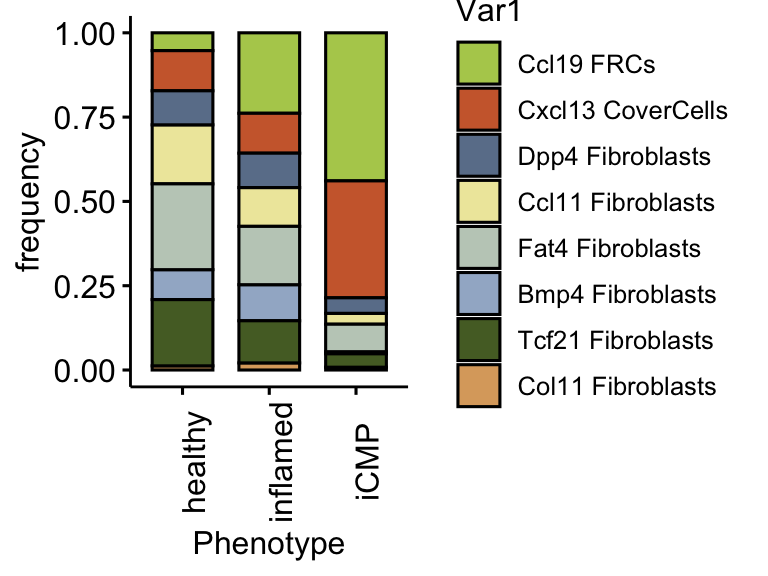
# Plot abundance of clusters across Conditions
datList <- list()
for(con in unique(seuratFB$cond)){
seuratFBSub <- subset(seuratFB, cond==con)
dat_con <- as.data.frame(table(seuratFBSub$FBclusterLabel)) %>%
mutate(percent=Freq/ncol(seuratFBSub)) %>% mutate(cond=con)
datList[[con]] <- dat_con
}
dat_all <- do.call("rbind", datList)
# Set cluster order
ordY <- c("Ccl19 FRCs", "Cxcl13 CoverCells", "Dpp4 Fibroblasts", "Ccl11 Fibroblasts", "Fat4 Fibroblasts", "Bmp4 Fibroblasts", "Tcf21 Fibroblasts", "Col11 Fibroblasts")
dat_all$Var1 <- factor(dat_all$Var1, levels = ordY)
# Barplot with Conditions on x axis and cluster colors
ggbarplot(dat_all, x= "cond", y= "percent", fill = "Var1", legend = "right", legend.titel = "cluster", ylab = "frequency")+ scale_fill_manual(values = colPal_FB)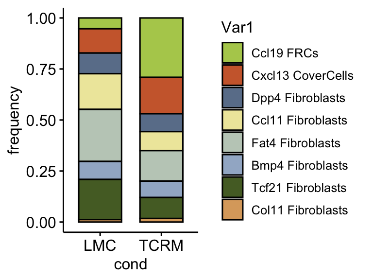
# Calculate DE genes per cluster compared to all others
Idents(seuratFB) <- seuratFB$FBclusterLabel
levels(seuratFB)
seuratFB_DEGenes <- FindAllMarkers(seuratFB, only.pos=T) %>%
dplyr::filter(p_val_adj < 0.01)
# Save DEGenes as text file
basedir<- here()
basedir <- paste0(basedir, "/docs/")
write.table(
seuratFB_DEGenes,
file = paste0(basedir, "pericarditis_allmerged_FB_0.25_cL_DEGenes.txt"),
row.names = FALSE,
quote = FALSE,
sep = "\t"
)basedir<- here()
fileNam <- paste0(basedir, "/docs/pericarditis_allmerged_FB_0.25_cL_DEGenes.txt")
seuratFB_DEGenes <- read.table(fileNam, header = TRUE, sep = "\t", stringsAsFactors = FALSE)# Clean DEGenes
DEGenes_all <- seuratFB_DEGenes %>%
mutate(EnsID = sub("\\..*", "", gene))
# Run enrichGO per cluster
cluster_list <- split(DEGenes_all, DEGenes_all$cluster)
ego_list <- lapply(names(cluster_list), function(clust){
df <- cluster_list[[clust]] %>%
filter(avg_log2FC > 0)
enrichGO(
gene = unique(df$EnsID),
OrgDb = org.Mm.eg.db,
keyType = "ENSEMBL",
ont = "BP",
pAdjustMethod = "BH",
pvalueCutoff = 0.05
)
})
names(ego_list) <- names(cluster_list)
# Selected immune interaction pathways
sel_all <- c(
"cytokine-mediated signaling pathway",
"regulation of innate immune response",
"immune response-activating signaling pathway",
"leukocyte cell-cell adhesion",
"positive regulation of lymphocyte activation",
"regulation of T cell proliferation"
)
# Combine to df
plot_df <- do.call(rbind, lapply(names(ego_list), function(cl){
ego_all <- ego_list[[cl]]
if (is.null(ego_all) || nrow(ego_all@result) == 0) return(NULL)
ego_all@result %>%
filter(Description %in% sel_all) %>%
mutate(
Cluster = cl,
log10_adjP = -log10(p.adjust)
)
}))
# Order clusters for plotting
cluster_colors <- c(
"Cxcl13 CoverCells"="#CD6839",
"Ccl19 FRCs"="#B2CD5B",
"Col11 Fibroblasts"="#DCA86C",
"Dpp4 Fibroblasts" = "#6B7F99",
"Fat4 Fibroblasts"="#C1CDC1",
"Bmp4 Fibroblasts"="#A2B5CD",
"Ccl11 Fibroblasts"="#EEE8AA",
"Tcf21 Fibroblasts"="#556B2F"
)
plot_df$Cluster <- factor(plot_df$Cluster, levels = names(cluster_colors))
# Lollipop plot
ggplot(plot_df,
aes(x = log10_adjP,
y = Description,
color = Cluster)) +
geom_linerange(
aes(xmin = 0, xmax = log10_adjP),
position = position_dodge(width = 0.8),
linewidth = 0.8
) +
geom_point(
aes(size = log10_adjP),
position = position_dodge(width = 0.8)
) +
scale_color_manual(values = cluster_colors) +
labs(
x = expression(-log[10]("adj. p-value")),
y = NULL,
color = "Cluster",
size = expression(-log[10]("adj. p-value"))
) +
theme_minimal(base_size = 13) +
theme(
panel.grid.major.y = element_blank(),
panel.grid.minor.y = element_blank()
)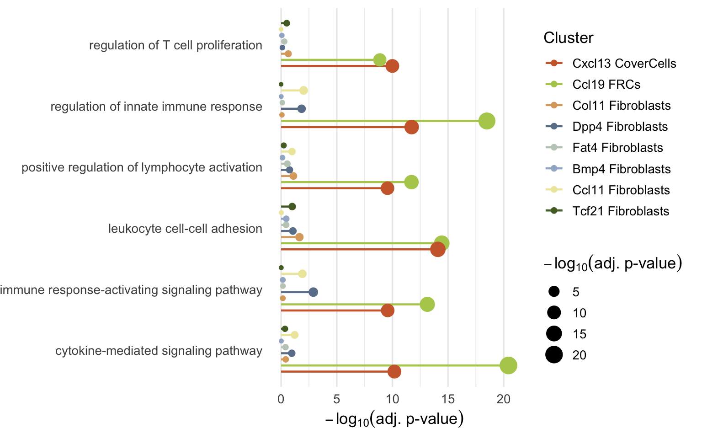
# Clean DEGenes
DEGenes_all <- seuratFB_DEGenes %>%
mutate(EnsID = sub("\\..*", "", gene))
# Run enrichGO per cluster
cluster_list <- split(DEGenes_all, DEGenes_all$cluster)
ego_list <- lapply(names(cluster_list), function(clust){
df <- cluster_list[[clust]] %>%
filter(avg_log2FC > 0)
enrichGO(
gene = unique(df$EnsID),
OrgDb = org.Mm.eg.db,
keyType = "ENSEMBL",
ont = "BP",
pAdjustMethod = "BH",
pvalueCutoff = 0.05
)
})
names(ego_list) <- names(cluster_list)
# Selected niche homeostasis pathways
sel_all <- c(
"extracellular matrix organization",
"regulation of cellular response to growth factor stimulus",
"transforming growth factor beta receptor signaling pathway",
"regulation of angiogenesis",
"connective tissue development",
"ossification"
)
# Combine to df
plot_df <- do.call(rbind, lapply(names(ego_list), function(cl){
ego_all <- ego_list[[cl]]
if (is.null(ego_all) || nrow(ego_all@result) == 0) return(NULL)
ego_all@result %>%
filter(Description %in% sel_all) %>%
mutate(
Cluster = cl,
log10_adjP = -log10(p.adjust)
)
}))
# Order clusters for plotting
cluster_colors <- c(
"Cxcl13 CoverCells"="#CD6839",
"Ccl19 FRCs"="#B2CD5B",
"Col11 Fibroblasts"="#DCA86C",
"Dpp4 Fibroblasts" = "#6B7F99",
"Fat4 Fibroblasts"="#C1CDC1",
"Bmp4 Fibroblasts"="#A2B5CD",
"Ccl11 Fibroblasts"="#EEE8AA",
"Tcf21 Fibroblasts"="#556B2F"
)
plot_df$Cluster <- factor(plot_df$Cluster, levels = names(cluster_colors))
# Lollipop plot
ggplot(plot_df,
aes(x = log10_adjP,
y = Description,
color = Cluster)) +
geom_linerange(
aes(xmin = 0, xmax = log10_adjP),
position = position_dodge(width = 0.8),
linewidth = 0.8
) +
geom_point(
aes(size = log10_adjP),
position = position_dodge(width = 0.8)
) +
scale_color_manual(values = cluster_colors) +
labs(
x = expression(-log[10]("adj. p-value")),
y = NULL,
color = "Cluster",
size = expression(-log[10]("adj. p-value"))
) +
theme_minimal(base_size = 13) +
theme(
panel.grid.major.y = element_blank(),
panel.grid.minor.y = element_blank()
)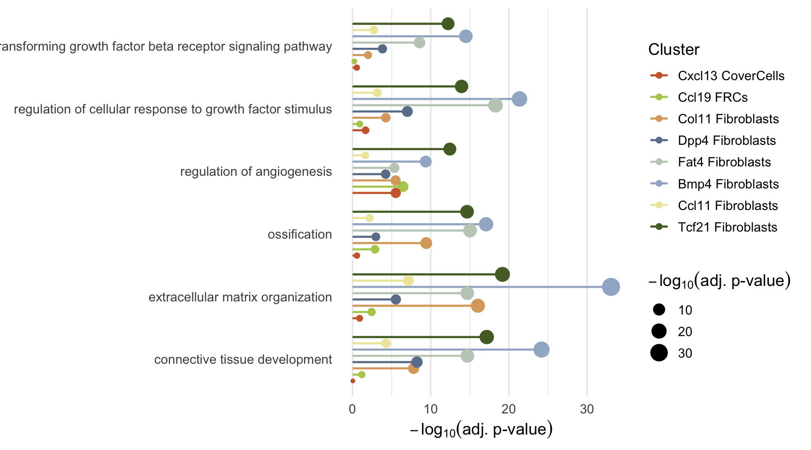
# Save seurat object
basedir <- here()
saveRDS(seuratFB, file = paste0(basedir, "/data/pericarditis_allmerged_FB_cleaned_cL_seurat.rds"))sessionInfo()R version 4.4.0 (2024-04-24)
Platform: x86_64-apple-darwin20
Running under: macOS Sonoma 14.3.1
Matrix products: default
BLAS: /Library/Frameworks/R.framework/Versions/4.4-x86_64/Resources/lib/libRblas.0.dylib
LAPACK: /Library/Frameworks/R.framework/Versions/4.4-x86_64/Resources/lib/libRlapack.dylib; LAPACK version 3.12.0
locale:
[1] en_US.UTF-8/en_US.UTF-8/en_US.UTF-8/C/en_US.UTF-8/en_US.UTF-8
time zone: Europe/Zurich
tzcode source: internal
attached base packages:
[1] grid stats4 stats graphics grDevices utils datasets
[8] methods base
other attached packages:
[1] here_1.0.1 DOSE_3.30.5 enrichplot_1.24.4
[4] org.Mm.eg.db_3.19.1 AnnotationDbi_1.66.0 IRanges_2.38.1
[7] S4Vectors_0.42.1 Biobase_2.64.0 BiocGenerics_0.50.0
[10] clusterProfiler_4.12.6 lubridate_1.9.4 forcats_1.0.0
[13] stringr_1.5.1 purrr_1.1.0 readr_2.1.5
[16] tidyr_1.3.2 tibble_3.3.0 tidyverse_2.0.0
[19] dplyr_1.1.4 pheatmap_1.0.13 ggpubr_0.6.1
[22] ggplot2_4.0.3 Seurat_5.3.0 SeuratObject_5.1.0
[25] sp_2.2-0
loaded via a namespace (and not attached):
[1] fs_1.6.6 matrixStats_1.5.0 spatstat.sparse_3.1-0
[4] httr_1.4.7 RColorBrewer_1.1-3 tools_4.4.0
[7] sctransform_0.4.2 backports_1.5.0 R6_2.6.1
[10] lazyeval_0.2.2 uwot_0.2.3 withr_3.0.2
[13] gridExtra_2.3 progressr_0.15.1 cli_3.6.5
[16] spatstat.explore_3.5-2 fastDummies_1.7.5 scatterpie_0.2.5
[19] labeling_0.4.3 sass_0.4.10 S7_0.2.0
[22] spatstat.data_3.1-6 ggridges_0.5.6 pbapply_1.7-4
[25] yulab.utils_0.2.0 gson_0.1.0 R.utils_2.13.0
[28] parallelly_1.45.1 rstudioapi_0.17.1 RSQLite_2.4.2
[31] generics_0.1.4 gridGraphics_0.5-1 ica_1.0-3
[34] spatstat.random_3.4-1 car_3.1-3 GO.db_3.19.1
[37] Matrix_1.7-3 abind_1.4-8 R.methodsS3_1.8.2
[40] lifecycle_1.0.4 yaml_2.3.10 carData_3.0-5
[43] qvalue_2.36.0 Rtsne_0.17 blob_1.2.4
[46] promises_1.3.3 crayon_1.5.3 miniUI_0.1.2
[49] lattice_0.22-7 cowplot_1.2.0 KEGGREST_1.44.1
[52] pillar_1.11.0 knitr_1.50 fgsea_1.30.0
[55] future.apply_1.20.0 codetools_0.2-20 fastmatch_1.1-6
[58] glue_1.8.0 ggfun_0.2.0 spatstat.univar_3.1-4
[61] data.table_1.17.8 vctrs_0.6.5 png_0.1-8
[64] treeio_1.28.0 spam_2.11-1 gtable_0.3.6
[67] cachem_1.1.0 xfun_0.52 mime_0.13
[70] tidygraph_1.3.1 survival_3.8-3 fitdistrplus_1.2-4
[73] ROCR_1.0-11 nlme_3.1-168 ggtree_3.12.0
[76] bit64_4.6.0-1 RcppAnnoy_0.0.22 GenomeInfoDb_1.40.1
[79] rprojroot_2.1.0 bslib_0.9.0 irlba_2.3.5.1
[82] KernSmooth_2.23-26 colorspace_2.1-1 DBI_1.2.3
[85] tidyselect_1.2.1 bit_4.6.0 compiler_4.4.0
[88] git2r_0.36.2 httr2_1.2.1 plotly_4.11.0
[91] shadowtext_0.1.5 scales_1.4.0 lmtest_0.9-40
[94] rappdirs_0.3.3 digest_0.6.37 goftest_1.2-3
[97] spatstat.utils_3.1-5 rmarkdown_2.29 XVector_0.44.0
[100] htmltools_0.5.8.1 pkgconfig_2.0.3 fastmap_1.2.0
[103] rlang_1.1.6 htmlwidgets_1.6.4 UCSC.utils_1.0.0
[106] shiny_1.11.1 farver_2.1.2 jquerylib_0.1.4
[109] zoo_1.8-14 jsonlite_2.0.0 BiocParallel_1.38.0
[112] GOSemSim_2.30.2 R.oo_1.27.1 magrittr_2.0.3
[115] Formula_1.2-5 GenomeInfoDbData_1.2.12 ggplotify_0.1.2
[118] dotCall64_1.2 patchwork_1.3.1 Rcpp_1.1.0
[121] ape_5.8-1 viridis_0.6.5 reticulate_1.43.0
[124] stringi_1.8.7 ggraph_2.2.1 zlibbioc_1.50.0
[127] MASS_7.3-65 plyr_1.8.9 parallel_4.4.0
[130] listenv_0.9.1 ggrepel_0.9.6 deldir_2.0-4
[133] Biostrings_2.72.1 graphlayouts_1.2.2 splines_4.4.0
[136] tensor_1.5.1 hms_1.1.3 igraph_2.1.4
[139] spatstat.geom_3.5-0 ggsignif_0.6.4 RcppHNSW_0.6.0
[142] reshape2_1.4.4 evaluate_1.0.4 tzdb_0.5.0
[145] tweenr_2.0.3 httpuv_1.6.16 RANN_2.6.2
[148] polyclip_1.10-7 future_1.58.0 scattermore_1.2
[151] ggforce_0.5.0 broom_1.0.8 xtable_1.8-4
[154] RSpectra_0.16-2 tidytree_0.4.6 rstatix_0.7.2
[157] later_1.4.2 viridisLite_0.4.2 aplot_0.2.8
[160] memoise_2.0.1 cluster_2.1.8.1 workflowr_1.7.2
[163] timechange_0.3.0 globals_0.18.0 date()[1] "Fri Jul 10 08:43:17 2026"
sessionInfo()R version 4.4.0 (2024-04-24)
Platform: x86_64-apple-darwin20
Running under: macOS Sonoma 14.3.1
Matrix products: default
BLAS: /Library/Frameworks/R.framework/Versions/4.4-x86_64/Resources/lib/libRblas.0.dylib
LAPACK: /Library/Frameworks/R.framework/Versions/4.4-x86_64/Resources/lib/libRlapack.dylib; LAPACK version 3.12.0
locale:
[1] en_US.UTF-8/en_US.UTF-8/en_US.UTF-8/C/en_US.UTF-8/en_US.UTF-8
time zone: Europe/Zurich
tzcode source: internal
attached base packages:
[1] grid stats4 stats graphics grDevices utils datasets
[8] methods base
other attached packages:
[1] here_1.0.1 DOSE_3.30.5 enrichplot_1.24.4
[4] org.Mm.eg.db_3.19.1 AnnotationDbi_1.66.0 IRanges_2.38.1
[7] S4Vectors_0.42.1 Biobase_2.64.0 BiocGenerics_0.50.0
[10] clusterProfiler_4.12.6 lubridate_1.9.4 forcats_1.0.0
[13] stringr_1.5.1 purrr_1.1.0 readr_2.1.5
[16] tidyr_1.3.2 tibble_3.3.0 tidyverse_2.0.0
[19] dplyr_1.1.4 pheatmap_1.0.13 ggpubr_0.6.1
[22] ggplot2_4.0.3 Seurat_5.3.0 SeuratObject_5.1.0
[25] sp_2.2-0
loaded via a namespace (and not attached):
[1] fs_1.6.6 matrixStats_1.5.0 spatstat.sparse_3.1-0
[4] httr_1.4.7 RColorBrewer_1.1-3 tools_4.4.0
[7] sctransform_0.4.2 backports_1.5.0 R6_2.6.1
[10] lazyeval_0.2.2 uwot_0.2.3 withr_3.0.2
[13] gridExtra_2.3 progressr_0.15.1 cli_3.6.5
[16] spatstat.explore_3.5-2 fastDummies_1.7.5 scatterpie_0.2.5
[19] labeling_0.4.3 sass_0.4.10 S7_0.2.0
[22] spatstat.data_3.1-6 ggridges_0.5.6 pbapply_1.7-4
[25] yulab.utils_0.2.0 gson_0.1.0 R.utils_2.13.0
[28] parallelly_1.45.1 rstudioapi_0.17.1 RSQLite_2.4.2
[31] generics_0.1.4 gridGraphics_0.5-1 ica_1.0-3
[34] spatstat.random_3.4-1 car_3.1-3 GO.db_3.19.1
[37] Matrix_1.7-3 abind_1.4-8 R.methodsS3_1.8.2
[40] lifecycle_1.0.4 yaml_2.3.10 carData_3.0-5
[43] qvalue_2.36.0 Rtsne_0.17 blob_1.2.4
[46] promises_1.3.3 crayon_1.5.3 miniUI_0.1.2
[49] lattice_0.22-7 cowplot_1.2.0 KEGGREST_1.44.1
[52] pillar_1.11.0 knitr_1.50 fgsea_1.30.0
[55] future.apply_1.20.0 codetools_0.2-20 fastmatch_1.1-6
[58] glue_1.8.0 ggfun_0.2.0 spatstat.univar_3.1-4
[61] data.table_1.17.8 vctrs_0.6.5 png_0.1-8
[64] treeio_1.28.0 spam_2.11-1 gtable_0.3.6
[67] cachem_1.1.0 xfun_0.52 mime_0.13
[70] tidygraph_1.3.1 survival_3.8-3 fitdistrplus_1.2-4
[73] ROCR_1.0-11 nlme_3.1-168 ggtree_3.12.0
[76] bit64_4.6.0-1 RcppAnnoy_0.0.22 GenomeInfoDb_1.40.1
[79] rprojroot_2.1.0 bslib_0.9.0 irlba_2.3.5.1
[82] KernSmooth_2.23-26 colorspace_2.1-1 DBI_1.2.3
[85] tidyselect_1.2.1 bit_4.6.0 compiler_4.4.0
[88] git2r_0.36.2 httr2_1.2.1 plotly_4.11.0
[91] shadowtext_0.1.5 scales_1.4.0 lmtest_0.9-40
[94] rappdirs_0.3.3 digest_0.6.37 goftest_1.2-3
[97] spatstat.utils_3.1-5 rmarkdown_2.29 XVector_0.44.0
[100] htmltools_0.5.8.1 pkgconfig_2.0.3 fastmap_1.2.0
[103] rlang_1.1.6 htmlwidgets_1.6.4 UCSC.utils_1.0.0
[106] shiny_1.11.1 farver_2.1.2 jquerylib_0.1.4
[109] zoo_1.8-14 jsonlite_2.0.0 BiocParallel_1.38.0
[112] GOSemSim_2.30.2 R.oo_1.27.1 magrittr_2.0.3
[115] Formula_1.2-5 GenomeInfoDbData_1.2.12 ggplotify_0.1.2
[118] dotCall64_1.2 patchwork_1.3.1 Rcpp_1.1.0
[121] ape_5.8-1 viridis_0.6.5 reticulate_1.43.0
[124] stringi_1.8.7 ggraph_2.2.1 zlibbioc_1.50.0
[127] MASS_7.3-65 plyr_1.8.9 parallel_4.4.0
[130] listenv_0.9.1 ggrepel_0.9.6 deldir_2.0-4
[133] Biostrings_2.72.1 graphlayouts_1.2.2 splines_4.4.0
[136] tensor_1.5.1 hms_1.1.3 igraph_2.1.4
[139] spatstat.geom_3.5-0 ggsignif_0.6.4 RcppHNSW_0.6.0
[142] reshape2_1.4.4 evaluate_1.0.4 tzdb_0.5.0
[145] tweenr_2.0.3 httpuv_1.6.16 RANN_2.6.2
[148] polyclip_1.10-7 future_1.58.0 scattermore_1.2
[151] ggforce_0.5.0 broom_1.0.8 xtable_1.8-4
[154] RSpectra_0.16-2 tidytree_0.4.6 rstatix_0.7.2
[157] later_1.4.2 viridisLite_0.4.2 aplot_0.2.8
[160] memoise_2.0.1 cluster_2.1.8.1 workflowr_1.7.2
[163] timechange_0.3.0 globals_0.18.0